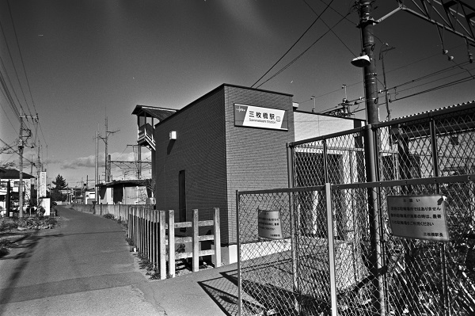
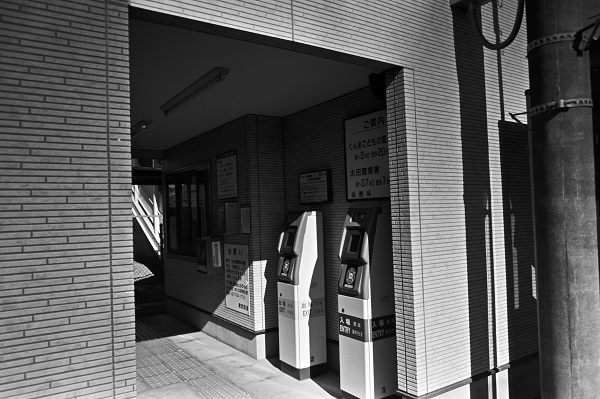
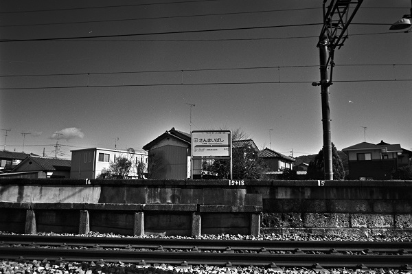
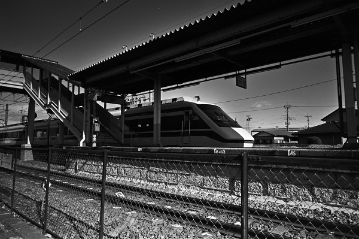
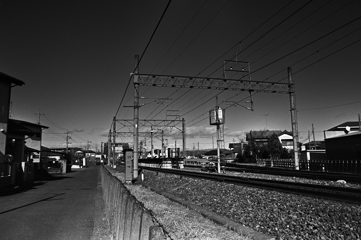

TI51_東武桐生線
TI_三枚橋駅 Sanmaibashi
太田駅←← 東武桐生線 →→治良門橋駅

2019/1/19 ﾍｷｻｰRF ｶﾗ-ｽｺｰﾊﾟｰ25mm ｱｸﾛｽ

2019/1/19 ﾍｷｻｰRF ｶﾗ-ｽｺｰﾊﾟｰ25mm ｱｸﾛｽ

2019/1/19 ﾍｷｻｰRF ｶﾗ-ｽｺｰﾊﾟｰ25mm ｱｸﾛｽ

2019/1/19 ﾍｷｻｰRF ｶﾗ-ｽｺｰﾊﾟｰ25mm ｱｸﾛｽ

2019/1/19 ﾍｷｻｰRF ｶﾗ-ｽｺｰﾊﾟｰ25mm ｱｸﾛｽ
戻る ﾎｰﾑ